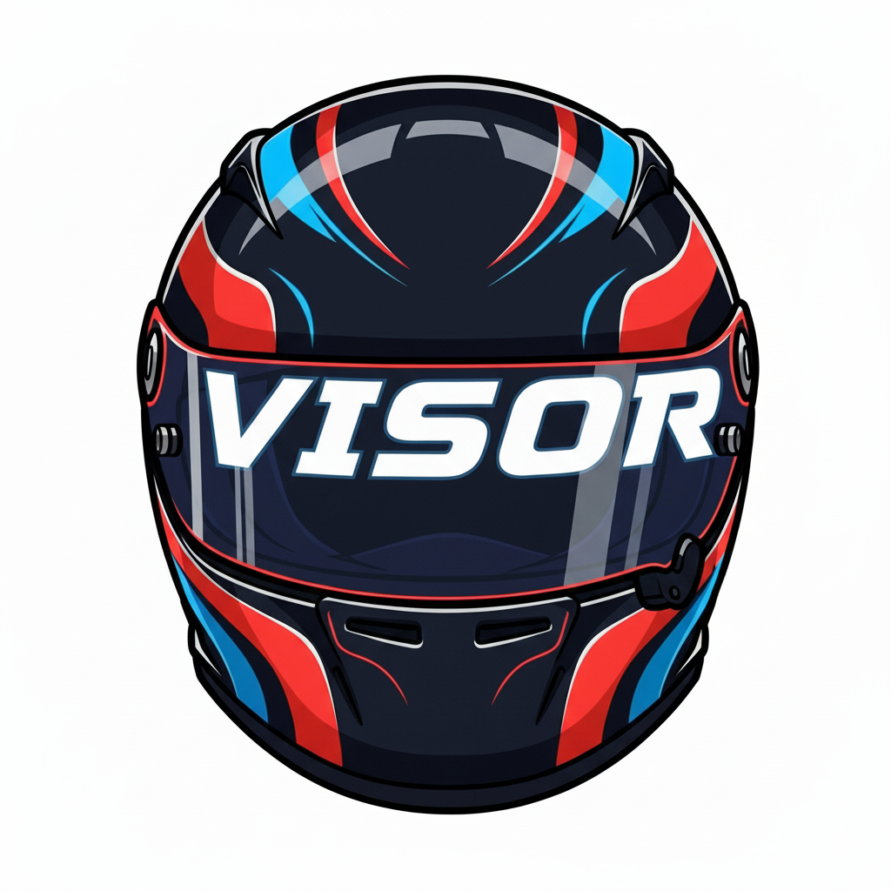

VISOR (Virtual Intelligence Simulator Overlay & Radar) is a real-time telemetry overlay for iRacing that includes only essential information such as position, fuel remaining, relative gaps, and a radar.
The Configuration Window lets you customize VISOR's display layout. Here you can toggle individual elements (Rows 0-5 and the Radar window) on or off based on what information you want visible during your race.
Choose from three size options that scale both the Main Window and Radar Window:
When the Configuration Window is open, both Main and Radar Windows display drag handles in the top-left corner. Click and drag to reposition. Positions save when you click "Done."
Beyond the row toggles, the Configuration Window offers a few display preferences:
On startup VISOR quietly checks GitHub for a newer release. If one is available, a small notice appears in the Configuration Window with a link to the download — there are no pop-ups, and the check fails silently if you're offline.
Gear Indicator: Displays current gear ("R" for reverse, "N" for neutral, numbers for forward gears) using a digital-style font for quick readability.
Shift Indicator: The gear symbol next to the number tells you when to upshift, the same way in every car, however that car's own dash lights work:
To start with, VISOR uses the shift point iRacing gives for the car (the one its shift lights are built around). As you drive, VISOR also works out the fastest shift point for each gear from your own full-throttle acceleration: the RPM where the next gear would pull harder than the one you're in. Once it has seen enough of a gear (usually a few laps of flat-out running), it switches that gear to the learned shift point. That may be earlier or later than the car's lights, and it can differ from gear to gear. What VISOR learns is saved on your PC for each car and builds up across sessions. When iRacing updates a car, VISOR starts learning it again. Learning pauses in the pits, on the pit limiter, off track, in replays, on a wet track and while cornering hard, since tires that are turning can't put all their grip into acceleration. The indicator stays gray in neutral, reverse and the pits, and in top gear it only turns red at the limiter.
VISOR only trusts a shift point once it has seen you drive at those revs. So if the car's light comes on early (it's telling you to shift before the engine has finished pulling), VISOR first proves the engine is still pulling harder at the light, then moves the cue a little later, about 250 RPM at a time. Each step waits until you've driven up to it and VISOR has confirmed it, so the cue works its way up to the real best shift point over a few laps or sessions. It never moves the cue earlier than the car's light until it has the full answer.
Calibration Dot: A small dot at the bottom left of the gear symbol shows whether the shift point for the gear you're in has stopped moving:
Position: Shows your race position. By default this is your position within your car class; you can switch it to overall (field-wide) position in the Configuration Window. In practice/qualifying: based on fastest lap times. In races: real-time track position. The pace/safety car is excluded from overall counts.
Time/Laps Remaining: In timed sessions, shows time remaining (HH:MM:SS or MM:SS). In lap-limited sessions, shows laps remaining for leader (+1 to iRacing's value). In qualifying, shows personal laps completed/total allowed. Displays "Final Lap" on the white flag and "FINISHED" on the checkered flag. When a session is lap-limited and on a clock — standard open qualifying, where you get a set number of flying laps within a set number of minutes — a smaller session countdown appears beneath the lap count (and beneath "Final Lap" and "FINISHED") so you can see both the laps you have left and the time you have to set them. It is hidden in every other session type.
Fuel Remaining: Estimates laps of fuel using a rolling 3-lap average of consumption. Updates after each lap (Format: "X.X Laps"). Most accurate after 3+ consistent laps.
Real-time visual comparison vs. your session best lap. The bar grows from the center: Right (green): faster, Left (red): slower, Center: matching pace. Range is ±3 seconds.
Last Lap: Your most recently completed lap time (M:SS.mmm). Best Lap: Your fastest valid lap this session (M:SS.mmm). Both values reset on a new session.
Shows 7 rows: 3 cars ahead, your car (yellow), and 3 behind. Gap times are calculated like a physical transponder loop to measure true time gaps between cars. Automatically hidden in Lone Qualifying sessions.
Visual Indicators: Yellow = you, White = same lap, Blue = lapped by you, Red = lapping you.
Pit Road: Cars on pit road display a "PIT" label and use gray proximity segments. An optional Hide cars in the pits setting (Configuration Window) removes pit-road cars from the table to reduce clutter — though you always see your own row, and pit-road cars reappear whenever you are on pit road yourself.
Position numbers: The position shown for each car follows the same Class / Overall choice as Row 0 (set in the Configuration Window).
Stationary Cars: Stopped vehicles on track display their physical distance in feet (capped at 999ft) in bold yellow text.
Proximity Bar: Features a dynamic 5-segment warning system that fills as cars get closer, scaling from an informational 8.0-second gap down to a critical 0.6-second gap. Automatically filters disconnected drivers.
Row 5 holds three independent readouts. Each can be shown or hidden on its own in the Configuration Window, so you can keep just the ones you want.
Track Location: The name of the corner or section of the circuit you're currently in — "Eau Rouge," "Kemmel Straight," and so on — like a sign hanging over the track. Names come from an editable catalog (Data/TrackSections.json) that ships alongside VISOR and covers 66 layouts out of the box, including the Nordschleife, Le Mans, and most iRacing road courses. On pit road it reads Pit Lane; on a track the catalog doesn't recognize (or when you're in the garage or being towed) the element simply hides. Advanced users can tune section boundaries or add tracks by editing the JSON file with a text editor — no rebuild required.
Incident Counter: Session incidents (0x, 4x, etc.). The color tracks how close you are to the session's incident limit rather than a fixed count, so it means the same thing whether your limit is 4x or 25x: white below ~30% of the limit, yellow from there to ~60%, and red beyond ~60% (roughly one bad incident from a DQ). Unlimited sessions use a gentle informational scale.
Track Temperature: The current track-surface temperature, shown in °F or °C (your choice in the Configuration Window). A small arrow shows the trend: red up when the surface is heating, blue down when it's cooling. The trend is smoothed over several minutes, so the arrow reflects a genuine change in conditions rather than sensor jitter.
Top-down proximity view with 5 vertical zones (far left, near left, center, near right, far right). Your car: green rectangle in center. Other cars: colored by class. Detection range: ~5 car lengths ahead/behind. Can be toggled on/off in the Configuration window.
Zones highlight based on iRacing spotter: left zone = car left, right zone = car right, both = cars both sides, two zones = multiple cars. Matches native spotter calls.
Automatically fades out when no cars in range, fades in when cars approach. Hidden automatically in Lone Qualifying.
Position: Based on fastest lap time. Relative: Sorted by proximity. Updates: On faster lap completions.
Position: Real-time track position (lap + distance). Relative: Cars physically near you. Lapped traffic: Color-coded (blue/red).
Disconnected drivers: A car whose telemetry has been missing for more than a few seconds (a driver who disconnects, quits, or loses connection) is dropped from VISOR's running order, so every car behind it moves up a place. iRacing's official results keep a disconnected driver classified on the laps they completed, so your final overall position in the results can be a place or more worse than VISOR showed if a driver ahead of you left the race. Positions are held once cars take the checkered flag, so drivers leaving after they finish do not affect them.
Relative Table and Radar Window automatically hide (no other cars on track simultaneously).
For questions, bug reports, or feedback:
Email: info@cephasmedia.com
License: Personal use only. See LICENSE.txt for full terms.